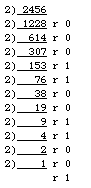

Section 3.8 introduced the idea of a sequence of numbers defined by a formula that could be applied to the numbers 1, 2, 3, 4, 5, ... in succession to produce the terms of the sequence. Not all sequences are defined in this manner; some are given in terms of a rule that works from previous terms to construct succeeding ones. For example, the Fibonacci sequence is defined as
an = 1 if n = 1 or 2
an = an-1 + an-2 otherwise.
Thus, the first few terms are: 1, 1, 2, 3, 5, 8, 13, 21, 34, 55, 89, ...
Likewise, the mathematical function factorial is defined on non-negative integers as:
n! = 1 if n = 0
n! = n(n - 1)! if n > 0
Thus one has :
1! = 1 * 0! = 1 2! = 2 * 1! = 2 3! = 3 * 2! = 6 4! = 4 * 3! = 24 5! = 5 * 4! = 120 and so on.
Such definitions, and indeed any definition that uses itself as part of itself, is said to be recursive. Since Modula-2 procedures must be constructed to model the calculations they perform, they too may have occasion to use themselves.
Any routine that employs itself during execution is said to be recursive.
This idea will be introduced here with some simple examples. Much more sophisticated use will be applied later in the text in a variety of contexts.
For the first, consider a procedure that implements a computation of the factorial function as it is defined, that is, recursively.
PROCEDURE Fac (num : CARDINAL) : CARDINAL;
BEGIN
IF num = 0
THEN
RETURN 1
ELSE
RETURN num * Fac (num - 1);
END;
END Fac;
Suppose the flow of control in a program enters this procedure via the call Fac (3). The statement under the ELSE would execute, causing 3 * Fac (2) to be computed. But this re-enters Fac, this time with num equal to 2. Since num is a value parameter, a new memory location is assigned to num on every entry. The statement under the ELSE executes again since num # 0, and a computation of 2 * Fac (1) is called for, so Fac is entered a third time asking for Fac (1). This causes a fourth entry to ask for Fac (0) which is dutifully returned back up the chain one step at a time. The successive returns are 1, 1, 2 and 6 and at the last return the calculation from the very first execution of ELSE concludes and the procedure ends.
There is one potential problem though. As in the writing of loops, one must be very careful not to specify a stopping condition on the chain of recursive calls that can never be achieved. (Here the stopping condition is n=0). Recursive procedures must be carefully designed, and not every programming language allows them, this being a technique that Modula-2 inherits from Pascal.
Even though the code given above does provide a simple and easily understood illustration of how recursion works, it is not difficult to see that calculating factorials does not have to be done recursively, for the solution is easily reformulated non-recursively as follows:
PROCEDURE FactorialNonRecursive (n : CARDINAL) : CARDINAL;
VAR
count, result : CARDINAL;
BEGIN
result := 1;
count := 0;
WHILE count < n
DO
INC (count);
result := result * count
END;
RETURN result
END FactorialNonRecursive;
On the other hand, recursion is inherent in a wide variety of problems, and some of these are rather more difficult to follow than the example above. In particular, it is not always so easy to reformulate a recursive idea in a non-recursive fashion. An ancient problem of intermediate difficulty whose solution is more naturally recursive is called the Tower of Hanoi. Often built as a child's toy, this puzzle consists of a rigid base into which are mounted three upright pegs, and a series of concentric disks of various sizes that can be placed over the pegs. To start with, all the disks are on one of the pegs, arranged with the largest at the bottom, in descending order of radius to the smallest at the top. The idea is to move all the disks from the first peg to the second, while at all times maintaining the correct size order on each of the pegs. That is, in making a move, one must always place a disk on top of one that is larger in diameter (not necessarily the next larger, but it must be larger).
This problem is best solved by building up a solution from the simplest case. Suppose that the three pegs are labelled origin, destination, and temporary. If there is only one disk involved in the game, then one need only to remove it from peg origin and place it on peg destination and the game is over.
If two disks are involved, the top one can be taken from origin and placed on temporary, and the game is then reduced to two single disk moves, namely of the second disk to destination and then the first one from temporary to destination on top of the larger disk.
If three disks are involved, one has to move two (one less than the total number) to the temporary peg (use the moves for a two-disk game as above), but using the destination peg as a temporary. Then one moves the bottom disk on the origin peg to the (now empty) destination peg and finally, using the original peg as a temporary, moves the two remaining ones to the final destination, again using a two-disk subgame. Likewise, if one starts with four disks, one first moves three to the temporary peg, using the destination peg as a temporary and the rules for a move of three disks (including the sub-games for two disks and one disk) then move the last disk to the destination, then again use the steps above for a game of three disks to transfer those disks now on the temporary peg to the destination peg using the origin peg as the temporary. That is, the game of four disks includes two sub-games of three disks, each with its sub-games of two disks and one disk.
That is, at any degree of complexity for the game, one can formulate the required steps to transfer a given number of pegs in terms of two sub-games involving one fewer disk, one before and one after a move of one disk. The overall solution is therefore formulated recursively in this fashion:
To move numberToMove disks from the origin peg to the destination peg:
The procedure can call itself to do the moves, with the stopping point in each series of calls being the one at which only one disk needs to be moved. Each time the procedure is called, the pegs to be regarded as origin, destination, and temporary will depend on the current stage of the game.
This recursive procedure is formulated within a module that is capable of testing the entire operation and repeating the game several times. Assuming that the end user of the program has a physical model of the game onto which the moves can be translated as they are provided by the machine, instructions will be given as to which move to make at each step, with the top disk on a given peg always being the one being referred to.
MODULE TryHanoi;
(* Written by R.J. Sutcliffe *)
(* to illustrate recursion *)
(* using P1 Modula-2 for the Macintosh computer *)
(* last revision 1993 02 26 *)
FROM STextIO IMPORT
WriteString, WriteChar, WriteLn, ReadChar, SkipLine;
FROM SWholeIO IMPORT
ReadCard, WriteCard;
VAR
origin, destination, temporary, key: CHAR;
userNumber: CARDINAL;
PROCEDURE TowerOfHanoi (numToMove : CARDINAL;
origin, destination, temp : CHAR);
BEGIN
IF numToMove = 1 (* only then do we move anything *)
THEN
WriteString (" Move a disk from peg ");
WriteChar (origin);
WriteString (" to peg ");
WriteChar (destination);
WriteLn
ELSE (* else make a recursive call to this *)
TowerOfHanoi ((numToMove - 1), origin, temp, destination);
TowerOfHanoi (1, origin, destination, temp );
TowerOfHanoi ((numToMove - 1), temp, destination, origin )
END
END TowerOfHanoi;
BEGIN (* Main program starts here *)
WriteLn;
WriteString ('Before starting, please label the pegs of your ');
WriteLn;
WriteString ('Tower of Hanoi game as "A", "B", and "C".');
WriteLn;
WriteString ('Now, place the disks in order on peg "A".');
WriteLn;
WriteString ("Enter number of disks to move ");
WriteString ("(use zero to end the program instead) ==>");
ReadCard (userNumber);
SkipLine;
WriteLn;
IF (userNumber > 0)
THEN
WriteLn;
(* assume they start at "A" and end at "B" *)
TowerOfHanoi (userNumber, "A", "B", "C")
END;
WriteString ("press any key to continue");
ReadChar (key);
END TryHanoi.
One run of this program produced the following output in the selected file for the choice of four disks:
Before starting, please label the pegs of your Tower of Hanoi game as "A", "B", and "C". Now, place the disks in order on peg "A". Enter number of disks to move (use zero to end the program instead) ==>4 Move a disk from peg A to peg C Move a disk from peg A to peg B Move a disk from peg C to peg B Move a disk from peg A to peg C Move a disk from peg B to peg A Move a disk from peg B to peg C Move a disk from peg A to peg C Move a disk from peg A to peg B Move a disk from peg C to peg B Move a disk from peg C to peg A Move a disk from peg B to peg A Move a disk from peg C to peg B Move a disk from peg A to peg C Move a disk from peg A to peg B Move a disk from peg C to peg B press any key to continue
NOTE: An interesting addition to this would be an animation that shows the progress of the game as it is conducted, or perhaps one that scores a user's attempts to play the game by forbidding incorrect moves.
One more simple example of recursion is found in the next example. It differs from the last two in that the recursion is not of a procedure invoking itself directly, but of two procedures that cooperate on a task by invoking each other. The solution is presented in detail. The student who is unfamiliar with binary notation might wish to review section 8.2 for the theory.
Write and test a procedure that prints out cardinal numbers in binary form. It should be declared as: PROCEDURE WriteCardBin (card : CARDINAL).
This is the very kind of repeated computation that is especially suited to a computer solution. This type of conversion is based on repeated division, followed by writing down the remainders in reverse order. For instance, to convert 2456 to binary (base two) form, one divides by 2 repeatedly:
The binary equivalent of the decimal numeral is now read from the remainders in reverse order. It is 100110011000.
A solution to this problem can be formulated in terms of two procedures. The first will divide the remaining number by two and call the second to print the remainder. The second will examine the quotient and actually print the remainder if this quotient is zero. Otherwise, it will call the first procedure again before printing.
Only STextIO and SWholeIO are used. Procedures to obtain the number to convert, and to print cardinals (zero and one) are all that are required.
Two procedures that call each other present a little difficulty. Ordinarily, one follows a "declare-it-before-using-it" rule in Modula-2, at the very least for the sake of clarity and readability. The Modula-2 language rules do not require this be done, envisioning that the code can be scanned as many times as necessary to resolve these circular references. However, some Modula-2 compilers only scan the source code once, so they do have "declare-it-before-using-it" as an inflexible rule. The difficulty is, if two procedures call each other, which one ought to be written out first? This is solved in such versions by adding a special reserved word FORWARD following the declaration of the syntax of one of the procedures at a point before its code is produced. When this is done, the compiler can check that syntax in the invocation by the second procedure, and postpone looking for actual code. The body of the procedure can then be elaborated somewhere else in the program, as long as the parameter list is repeated exactly at the time that is done. Note that if the compiler is of the type that makes several passes through the code, it can resolve such references without needing to have one procedure declared as FORWARD.
If two procedures each invoke the other, or control can otherwise pass through a chain of procedure calls and reach the original calling procedure, this is called mutual recursion or indirect recursion.
NOTES: 1. Although the multiple pass technique initially defined standard Modula-2, Wirth himself later began to write one-pass compilers in order to gain speed at compile time. As a result, FORWARD came to be regarded as an optional standard reserved word, rather than as a non-standard one. The ISO standard accepts this and allows compilers to conform regardless of which model is used, though multiple pass compilers should accept and deal correctly with FORWARD declarations, even if all they do is ignore them. That is, in the ISO standard, FORWARD is a reserved word; whether its use causes the compiler to do anything or not is optional.
2. The programmer must, as in all recursive situations, ensure that progress is actually made toward an eventual goal, or the program could end up executing in an infinite loop.
3. If the procedure being declared as FORWARD has a parameter list and/or a return type, this heading must be duplicated exactly when the procedure code is actually elaborated.
The only variables that are needed in the main program are a cardinal to convert, a character variable keyboard responses to questions, and a boolean for recycling the entire program. Necessary imports include ReadCard, WriteCard, WriteString, WriteLn, SkipLine, and ReadChar.
An input of 2456 will produce an output of 100110011000. No padding with blanks will be undertaken; the Write will take the amount of room necessary for the output number.
MODULE CardBinConvert;
(* Written by R.J. Sutcliffe *)
(* to illustrate mutual recursion *)
(* using P1 Modula-2 for the Macintosh computer *)
(* last revision 1993 02 26 *)
(* This program drives a procedure that prints a cardinal in binary form *)
FROM STextIO IMPORT
WriteString, WriteLn, ReadChar, SkipLine;
FROM SWholeIO IMPORT
WriteCard, ReadCard;
(*
PROCEDURE WriteRem (whatsLeft, RemToPrint : CARDINAL); FORWARD;
*) (* uncomment if one-pass version *) (* code comes later *)
PROCEDURE WriteCardBin (x : CARDINAL);
(* This procedure writes the supplied cardinal in binary form
Pre: none
Post: The binary representation is written to the standard output *)
VAR
quotient, rem : CARDINAL;
BEGIN
quotient := x DIV 2;
rem := x MOD 2;
WriteRem (quotient, rem);
END WriteCardBin;
PROCEDURE WriteRem (whatsLeft, remToPrint : CARDINAL);
(* writes out the remainder from the division
Pre: whatsLeft is the current quotient from dividing by two
remToPrint is the last remainder obtained
Post: if the quotient supplied was zero, the remainder is printed
else, WriteCardBin is first called with the current quotient *)
BEGIN
IF whatsLeft > 0
THEN
WriteCardBin (whatsLeft)
END;
WriteCard (remToPrint, 1); (* one digit, no space extra *)
END WriteRem;
VAR (* main program variables *)
theNumber : CARDINAL;
again : BOOLEAN;
key, answer : CHAR;
BEGIN
WriteString ("This program tests a procedure to print ");
WriteString ("cardinals in binary form");
WriteLn;
REPEAT (* main repeat loop *)
(* get the number *)
WriteString ("Enter the number to be changed ");
WriteString ("to binary form ==> ");
ReadCard (theNumber);
SkipLine;
WriteLn;
WriteString ("The cardinal ");
WriteCard (theNumber, 0);
WriteString (" converted to binary form is: ");
WriteCardBin (theNumber);
WriteLn;
WriteString ("Do another? Y/N ");
ReadChar (answer);
SkipLine;
again := (CAP (answer) = "Y");
UNTIL NOT again;
END CardBinConvert.
Here is one run from this program:
This program tests a procedure to print cardinals in binary form Enter the number that is to be changed to binary form ==> 12 The cardinal 12 converted to binary form is: 1100 Do another? Y/N Y Enter the number that is to be changed to binary form ==> 15 The cardinal 15 converted to binary form is: 1111 Do another? Y/N y Enter the number that is to be changed to binary form ==> 65535 The cardinal 65535 converted to binary form is: 1111111111111111 Do another? Y/N y Enter the number that is to be changed to binary form ==> 0 The cardinal 0 converted to binary form is: 0 Do another? Y/N y Enter the number that is to be changed to binary form ==> 8 The cardinal 8 converted to binary form is: 1000 Do another? Y/N n